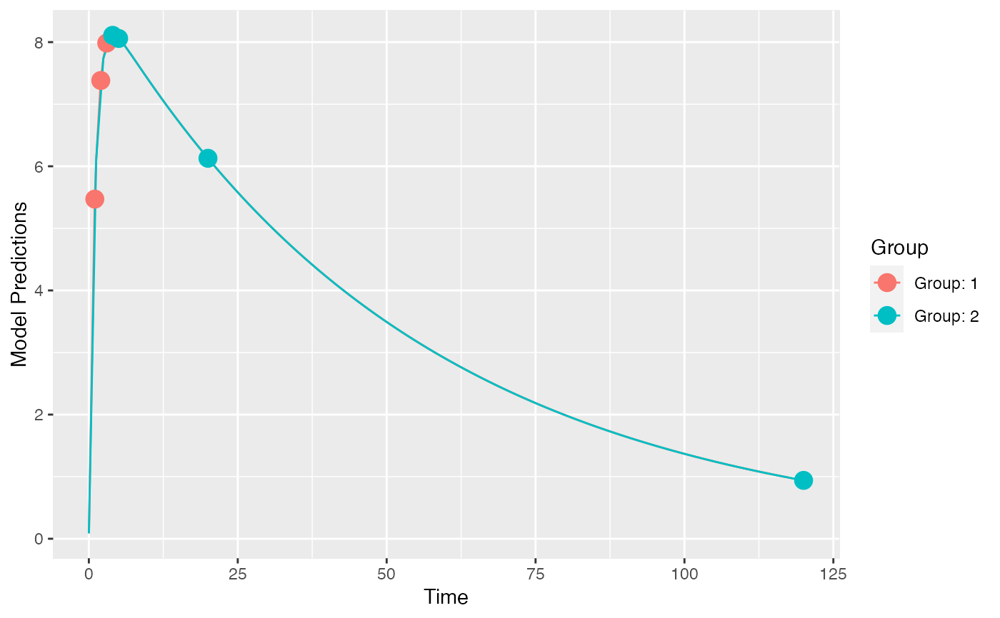

R/optimize_n.R
optimize_groupsize.RdTitle Optimize the proportion of individuals in the design groups
A PopED database.
The proportions of individuals in each group (relative to the total number of individuals) to start the optimization from.
Should there be tracing of the optimization? Value can be integer values. Larger numbers give more information.
A list of the initial objective function value, optimal proportions, the objective function value with those proportions, the optimal number of individuals in each group (with integer number of individuals), and the objective function value with that number of individuals.
# 2 design groups with either early or late samples
poped.db <- create.poped.database(ff_fun=ff.PK.1.comp.oral.sd.CL,
fg_fun=function(x,a,bpop,b,bocc){
parameters=c(CL=bpop[1]*exp(b[1]),
V=bpop[2]*exp(b[2]),
KA=bpop[3]*exp(b[3]),
Favail=bpop[4],
DOSE=a[1])
return(parameters)
},
fError_fun=feps.add.prop,
bpop=c(CL=0.15, V=8, KA=1.0, Favail=1),
notfixed_bpop=c(1,1,1,0),
d=c(CL=0.07, V=0.02, KA=0.6),
sigma=c(0.01,0.25),
xt=list(c(1,2,3),c(4,5,20,120)),
groupsize=50,
minxt=0.01,
maxxt=120,
a=70,
mina=0.01,
maxa=100)
plot_model_prediction(poped.db)

evaluate_design(poped.db)
#> $ofv
#> [1] 57.34239
#>
#> $fim
#> CL V KA d_CL d_V d_KA
#> CL 20100.83363 100.60318 57.19595 0.0000000 0.0000 0.0000000
#> V 100.60318 47.77375 -18.43690 0.0000000 0.0000 0.0000000
#> KA 57.19595 -18.43690 80.55401 0.0000000 0.0000 0.0000000
#> d_CL 0.00000 0.00000 0.00000 2019.7601648 73.4525 0.6961553
#> d_V 0.00000 0.00000 0.00000 73.4524996 48705.8108 117.2176533
#> d_KA 0.00000 0.00000 0.00000 0.6961553 117.2177 51.8762750
#> SIGMA[1,1] 0.00000 0.00000 0.00000 1428.9648684 31892.5113 417.9515723
#> SIGMA[2,2] 0.00000 0.00000 0.00000 274.2990996 640.9862 10.3145690
#> SIGMA[1,1] SIGMA[2,2]
#> CL 0.0000 0.00000
#> V 0.0000 0.00000
#> KA 0.0000 0.00000
#> d_CL 1428.9649 274.29910
#> d_V 31892.5113 640.98623
#> d_KA 417.9516 10.31457
#> SIGMA[1,1] 353788.5599 6967.23365
#> SIGMA[2,2] 6967.2337 236.40519
#>
#> $rse
#> CL V KA d_CL d_V d_KA SIGMA[1,1]
#> 4.742175 1.908239 11.706099 38.149149 23.388391 23.297863 28.859652
#> SIGMA[2,2]
#> 48.150485
#>
# what are the optimal proportions of
# individuals in the two groups in the study?
(n_opt <- optimize_groupsize(poped.db))
#> Initial proportions:
#> 0.5 0.5
#>
#> initial value -57.342391
#> final value -57.747204
#> converged
#>
#> Optimized proportions:
#> 0.2984998 0.7015002
#>
#> Optimized number of individuals per group
#> OFV: 57.74718
#> 30 70
#>
#> $initial_props
#> [1] 0.5 0.5
#>
#> $initial_ofv
#> [1] 57.34239
#>
#> $opt_props
#> [1] 0.2984998 0.7015002
#>
#> $opt_ofv_with_props
#> [1] 57.7472
#>
#> $opt_n_per_group
#> [1] 30 70
#>
#> $opt_ofv_with_n
#> [1] 57.74718
#>
# How many individuals in the original design are needed to achieve an
# efficiency of 1 compared to the optimized design with n=100?
optimize_n_eff(poped.db,
ofv_ref=n_opt$opt_ofv_with_n)
#> [1] 105.19